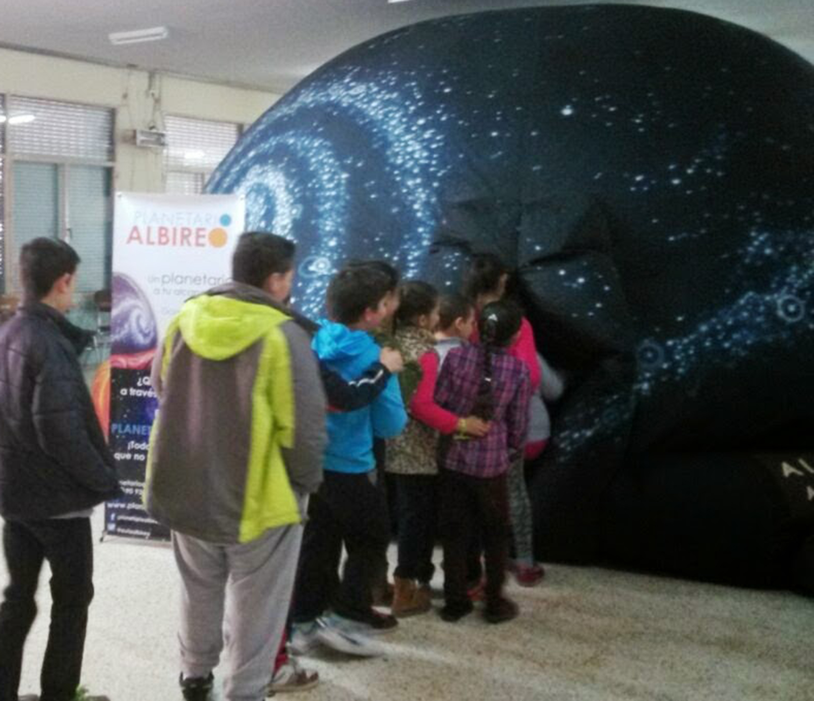

Llevamos nuestro Planetario hasta donde tú quieras, lo montamos en 30 minutos y los participantes van entrando en grupos de 40-50 personas. Sesiones en vivo e interactivas adaptadas a cada nivel y edad. Para todos los públicos. A cualquier edad disfrutarás dentro de nuestro planetario.
El Planetario Itinerante es una cupula portátil, inflable, semiesférica, similar a los grandes planetarios fijos. Su extraordinaria calidad permite simular el cielo nocturno en pleno día, creando condiciones ideales para la obsevación de la esfera celeste y mapas estelares de forma educativa y amena.
Invita al espectador al conocimiento del espacio de forma entretenida, para convertir el aprendizaje en una verdadera aventura. Introduce al alumnado al conocimiento del Universo, de una forma sencilla y divertida.
El Planetario está dirigido a:
Centros de educación (desde Infantil hasta Bachiller inclusive), ayuntamientos, asociaciones de mayores, de padres y familias, de vecinos, comunidades, centros de discapacitados físicos y psíquicos.
Cada sesión, ¡un viaje por el universo!
El contenido de cada sesión se puede ajustar a las peticiones del profesorado. Complementamos la materia dada en clase. La programación se ajusta a los distíntos niveles y edades.
